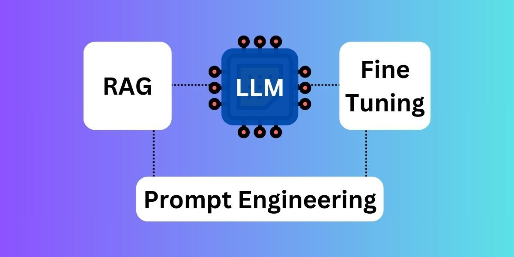

Fine-Tuning vs. Other Techniques
- In-Context Learning (ICL)
Providing a few examples within the prompt to guide the model.
It's powerful but can increase cost and latency, and the model might ignore examples if there are too many.
- Retrieval-Augmented Generation (RAG)
Providing the model with external, up-to-date information from a database to answer a query.
RAG does not update the model's weights; it only provides context for a specific prompt.
